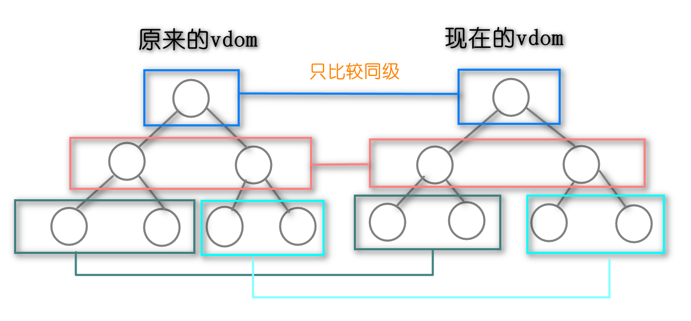
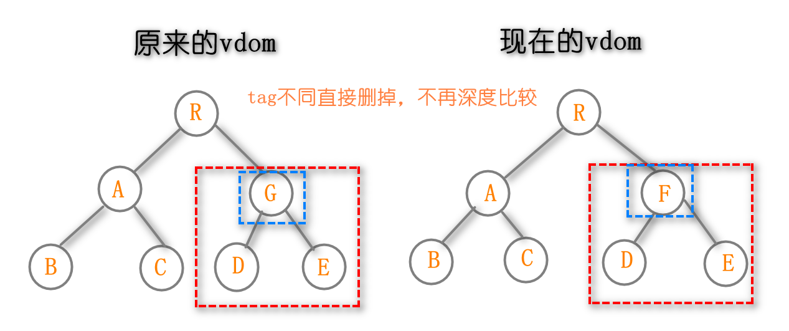

面试为什么要考察原理
- 知其然知其所以然，各行各业通用的道理
- 了解原理才能用的很好，专业性考察，技术的追求
- 竞争激烈，则优录取
- 大厂造轮子（业务定制：有些框架不能满足需求）
面试中如何考察，以何种方式考察
- 考察重点，不考察细节。2/8原则
- 和使用相关的原理
1. Vue响应式原理
vue响应式指的是：组件的data发生变化，立刻触发试图的更新
原理：
- Vue 采用数据劫持结合发布者-订阅者模式的方式来实现数据的响应式，通过Object.defineProperty来劫持数据的setter，getter，在数据变动时发布消息给订阅者，订阅者收到消息后进行相应的处理。
- 通过原生js提供的监听数据的API，当数据发生变化的时候，在回调函数中修改dom
- 核心API：Object.defineProperty
简单API：Object.defineProperty的使用
作用: 用来定义对象属性
特点：
- 默认情况下定义的数据的属性不能修改
- 描述属性和存取属性不能同时使用，使用会报错
响应式原理：
- 获取属性值会触发getter方法
- 设置属性值会触发setter方法
- 在setter方法中调用修改dom的方法
如何实现的监听数组
嵌套对象，如何实现深度监听
Object.defineProperty的几个缺点
2. 虚拟dom和diff算法
2.1 虚拟dom和diff算法
- 虚拟dom（Virtual dom）是实现vue和React的核心
- diff算法是vdom中最核心最关键的部分
2.2 虚拟dom解决的问题
- 真实的dom操作相当耗性能：操作一次dom触发一次渲染，渲染耗时
- 以前面试题将常考使用jquery或者原生js操作dom时，如何做性能优化：将多条dom操作合并成一条
- vue和react都是数据驱动视图，如何控制dom操作？ 使用vdom
2.2 虚拟dom如何解决的问题
- js计算要比dom渲染速度快
- vdom使用js模拟dom结构，计算出最小的变更，操作dom
2.3 虚拟dom如何模拟dom结构 （手写虚拟dom树）
1 | <div class='vdom' id='first'> |
1 | { |
2.4 从源码角度分析虚拟dom视图更新过程
- 调用init方法，返回一个patch函数，init方法的参数是一个数组，数组中是各种模块，根据传入的模块定制化patch函数
- 使用h函数返回生成vnode的方法
- 调用render生成真实的虚拟dom
- 调用
init方法会返回一个patch函数，这个函数接受两个参数，第一个是旧的vnode节点或是dom节点，第二个参数是新的vnode节点，调用patch函数会对 dom 进行更新。
2.5 vue中虚拟dom比较流程（diff算法）
2.5.1 vue中虚拟dom比较流程
第一步：patch函数中对新老节点进行比较
- 如果新节点不存在就销毁老节点
- 如果老节点不存在，直接创建新的节点
- 当两个节点是相同节点的时候，进入 patctVnode 的过程，比较两个节点的内部
1
2
3
4
5
6
7
8
9
10
11
12
13
14
15
16
17
18
19
20
21
22
23
24
25
26
27
28
29
30
31
32
33
34
35
36
37
38
39
40
41
42
43
44
45
46
47
48
49
50
51
52
53
54
55
56
57
58
59
60
61
62
63
64
65
66
67
68
69
70
71
72
73
74
75
76
77
78
79
80
81
82
83
84
85
86
87
88
89
90// 用于 比较 新老节点的不同，然后更新的 函数
function patch (oldVnode, vnode, hydrating, removeOnly) {
// 1. 当新节点不存在的时候，销毁旧节点
if (isUndef(vnode)) {
if (isDef(oldVnode)) invokeDestroyHook(oldVnode)
return
}
let isInitialPatch = false
// 用来存储 insert 钩子函数，在 插入节点之后调用
const insertedVnodeQueue = []
// 2. 如果旧节点 是未定义的，直接创建新节点
if (isUndef(oldVnode)) {
isInitialPatch = true
createElm(vnode, insertedVnodeQueue)
} else {
const isRealElement = isDef(oldVnode.nodeType)
// 当老节点不是真实的 dom 节点， 当两个节点是相同节点的时候，进入 patctVnode 的过程
// 而 patchVnode 也是 传说中 diff updateChildren 的调用者
if (!isRealElement && sameVnode(oldVnode, vnode)) {
// patch existing root node
patchVnode(oldVnode, vnode, insertedVnodeQueue, null, null, removeOnly)
} else {
// 当老节点是真实存在的 dom 节点的时候
if (isRealElement) {
// 当 老节点是 真实节点，而是在 ssr 环境的时候，修改 SSR_ATTR 属性
if (oldVnode.nodeType === 1 && oldVnode.hasAttribute(SSR_ATTR)) {
oldVnode.removeAttribute(SSR_ATTR)
hydrating = true
}
....
// 设置 oldVnode 为一个包含 oldVnode 的无属性节点
oldVnode = emptyNodeAt(oldVnode)
}
// replacing existing element
const oldElm = oldVnode.elm
// 获取父亲节点，这样方便 删除或者增加节点
const parentElm = nodeOps.parentNode(oldElm)
// 在 dom 中插入新节点
createElm(
vnode,
insertedVnodeQueue,
oldElm._leaveCb ? null : parentElm,
nodeOps.nextSibling(oldElm)
)
// 递归 更新父占位符元素
// 就是执行一遍 父节点的 destory 和 create 、insert 的 钩子函数
// 类似于 style 组件，事件组件，这些 钩子函数
if (isDef(vnode.parent)) {
let ancestor = vnode.parent
const patchable = isPatchable(vnode)
while (ancestor) {
for (let i = 0; i < cbs.destroy.length; ++i) {
cbs.destroy[i](ancestor)
}
ancestor.elm = vnode.elm
if (patchable) {
for (let i = 0; i < cbs.create.length; ++i) {
cbs.create[i](emptyNode, ancestor)
}
const insert = ancestor.data.hook.insert
if (insert.merged) {
for (let i = 1; i < insert.fns.length; i++) {
insert.fns[i]()
}
}
} else {
registerRef(ancestor)
}
ancestor = ancestor.parent
}
}
// 销毁老节点
if (isDef(parentElm)) {
removeVnodes([oldVnode], 0, 0)
} else if (isDef(oldVnode.tag)) {
// 触发老节点 的 destory 钩子
invokeDestroyHook(oldVnode)
}
}
}
// 执行 虚拟 dom 的 insert 钩子函数
invokeInsertHook(vnode, insertedVnodeQueue, isInitialPatch)
// 返回最新 vnode 的 elm ，也就是真实的 dom节点
return vnode.elm
}如何判断两个节点是否相同？key、tagName、标签属性、input标签还要比较type类型
1
2
3
4
5
6
7
8
9
10function sameVnode (a, b) {
return (
a.key === b.key && // key值
a.tag === b.tag && // 标签名
a.isComment === b.isComment && // 是否为注释节点
// 是否都定义了data，data包含一些具体信息，例如onclick , style
isDef(a.data) === isDef(b.data) &&
sameInputType(a, b) // 当标签是<input>的时候，type必须相同
)
}1
2
3
4
5
6
7function sameInputType (a, b) {
if (a.tag !== 'input') { return true }
var i;
var typeA = isDef(i = a.data) && isDef(i = i.attrs) && i.type;
var typeB = isDef(i = b.data) && isDef(i = i.attrs) && i.type;
return typeA === typeB || isTextInputType(typeA) && isTextInputType(typeB)
}第二步：patchVnode函数比较两个虚拟节点内部
- 如果两个虚拟节点完全相同，返回
- 当前vnode 的children 不是textNode，再分成三种情况
- 有新children，没有旧children，创建新的
- 没有新children，有旧children，删除旧的
- 新children、旧children都有，执行
updateChildren比较children的差异，这里就是diff算法的核心
- 当前vnode 的children 是textNode，直接更新text
1
2
3
4
5
6
7
8
9
10
11
12
13
14
15
16
17
18
19
20
21
22
23
24
25
26
27
28
29
30
31
32
33
34
35
36
37
38
39
40
41
42
43
44
45
46
47
48
49
50
51
52
53
54
55
56
57
58
59
60
61
62
63
64
65
66
67
68
69
70
71
72
73
74
75
76
77
78
79
80
81function patchVnode (
oldVnode, // 旧节点
vnode, // 新节点
insertedVnodeQueue, // 插入节点的队列
ownerArray, // 节点 数组
index, // 当前 节点的
removeOnly // 只有在 patch 函数中被传入，当老节点不是真实的 dom 节点，当新老节点是相同节点的时候
) {
// 如果新节点和旧节点 相等(使用了 同一个地址，直接返回不进行修改)
// 这里就是 当 props 没有改变的时候，子组件不会做渲染，而是直接复用
if (oldVnode === vnode) {
return
}
if (isDef(vnode.elm) && isDef(ownerArray)) {
// clone reused vnode
vnode = ownerArray[index] = cloneVNode(vnode)
}
const elm = vnode.elm = oldVnode.elm
// 当 当前节点 是 注释节点(被 v-if )了，或者是一个 异步函数节点，那不执行
if (isTrue(oldVnode.isAsyncPlaceholder)) {
if (isDef(vnode.asyncFactory.resolved)) {
hydrate(oldVnode.elm, vnode, insertedVnodeQueue)
} else {
vnode.isAsyncPlaceholder = true
}
return
}
// 当前节点 是一个静态节点的时候，或者 标记了 once 的时候，那不执行
if (isTrue(vnode.isStatic) &&
isTrue(oldVnode.isStatic) &&
vnode.key === oldVnode.key &&
(isTrue(vnode.isCloned) || isTrue(vnode.isOnce))
) {
vnode.componentInstance = oldVnode.componentInstance
return
}
let i
const data = vnode.data
// 调用 prepatch 的钩子函数
if (isDef(data) && isDef(i = data.hook) && isDef(i = i.prepatch)) {
i(oldVnode, vnode)
}
const oldCh = oldVnode.children
const ch = vnode.children
// 调用 update 钩子函数
if (isDef(data) && isPatchable(vnode)) {
// 这里 的 update 钩子函数式 vnode 本身的钩子函数
for (i = 0; i < cbs.update.length; ++i) cbs.update[i](oldVnode, vnode)
// 这里的 update 钩子函数 是 用户传过来的 钩子函数
if (isDef(i = data.hook) && isDef(i = i.update)) i(oldVnode, vnode)
}
// 新节点 没有 text 属性
if (isUndef(vnode.text)) {
// 如果都有子节点，对比更新子节点
if (isDef(oldCh) && isDef(ch)) {
if (oldCh !== ch) updateChildren(elm, oldCh, ch, insertedVnodeQueue, removeOnly)
} else if (isDef(ch)) { // 新节点存在，但是老节点不存在
// 如果老节点是 text， 清空
if (isDef(oldVnode.text)) nodeOps.setTextContent(elm, '')
// 增加子节点
addVnodes(elm, null, ch, 0, ch.length - 1, insertedVnodeQueue)
} else if (isDef(oldCh)) { // 老节点存在，但是新节点不存在，执行删除
removeVnodes(oldCh, 0, oldCh.length - 1)
} else if (isDef(oldVnode.text)) { // 如果老节点是 text， 清空
nodeOps.setTextContent(elm, '')
}
// 新旧节点 text 属性不一样
} else if (oldVnode.text !== vnode.text) {
// 将 text 设置为 新节点的 text
nodeOps.setTextContent(elm, vnode.text)
}
if (isDef(data)) {
// 执行 postpatch 钩子函数
if (isDef(i = data.hook) && isDef(i = i.postpatch)) i(oldVnode, vnode)
}
}第三步：updateChildren函数子节点进行比较diff算法
- 第一步 头头比较。若相似，旧头新头指针后移（即
oldStartIdx++&&newStartIdx++），真实dom不变，进入下一次循环；不相似，进入第二步。 - 第二步 尾尾比较。若相似，旧尾新尾指针前移（即
oldEndIdx--&&newEndIdx--），真实dom不变，进入下一次循环；不相似，进入第三步。 - 第三步 头尾比较。若相似，旧头指针后移，新尾指针前移（即
oldStartIdx++&&newEndIdx--），未确认dom序列中的头移到尾，进入下一次循环；不相似，进入第四步。 - 第四步 尾头比较。若相似，旧尾指针前移，新头指针后移（即
oldEndIdx--&&newStartIdx++），未确认dom序列中的尾移到头，进入下一次循环；不相似，进入第五步。 - 第五步 若节点有key且在旧子节点数组中找到sameVnode（tag和key都一致），则将其dom移动到当前真实dom序列的头部，新头指针后移（即
newStartIdx++）；否则，vnode对应的dom（vnode[newStartIdx].elm）插入当前真实dom序列的头部，新头指针后移（即newStartIdx++）。
- 第一步 头头比较。若相似，旧头新头指针后移（即
- 但结束循环后，有两种情况需要考虑：
- 新的字节点数组（newCh）被遍历完（
newStartIdx > newEndIdx）。那就需要把多余的旧dom（oldStartIdx -> oldEndIdx）都删除，上述例子中就是c,d； - 新的字节点数组（oldCh）被遍历完（
oldStartIdx > oldEndIdx）。那就需要把多余的新dom（newStartIdx -> newEndIdx）都添加。
1
2
3
4
5
6
7
8
9
10
11
12
13
14
15
16
17
18
19
20
21
22
23
24
25
26
27
28
29
30
31
32
33
34
35
36
37
38
39
40
41
42
43
44
45
46
47
48
49
50
51
52
53
54
55
56
57
58
59
60
61function updateChildren (parentElm, oldCh, newCh) {
let oldStartIdx = 0
let newStartIdx = 0
let oldEndIdx = oldCh.length - 1
let oldStartVnode = oldCh[0]
let oldEndVnode = oldCh[oldEndIdx]
let newEndIdx = newCh.length - 1
let newStartVnode = newCh[0]
let newEndVnode = newCh[newEndIdx]
let oldKeyToIdx, idxInOld, elmToMove, before
while (oldStartIdx <= oldEndIdx && newStartIdx <= newEndIdx) {
if (isUndef(oldStartVnode)) {
oldStartVnode = oldCh[++oldStartIdx] // 未定义表示被移动过
} else if (isUndef(oldEndVnode)) {
oldEndVnode = oldCh[--oldEndIdx]
} else if (sameVnode(oldStartVnode, newStartVnode)) { // 头头相似
patchVnode(oldStartVnode, newStartVnode)
oldStartVnode = oldCh[++oldStartIdx]
newStartVnode = newCh[++newStartIdx]
} else if (sameVnode(oldEndVnode, newEndVnode)) { // 尾尾相似
patchVnode(oldEndVnode, newEndVnode)
oldEndVnode = oldCh[--oldEndIdx]
newEndVnode = newCh[--newEndIdx]
} else if (sameVnode(oldStartVnode, newEndVnode)) { // 头尾相似
patchVnode(oldStartVnode, newEndVnode)
api.insertBefore(parentElm, oldStartVnode.elm, api.nextSibling(oldEndVnode.elm))
oldStartVnode = oldCh[++oldStartIdx]
newEndVnode = newCh[--newEndIdx]
} else if (sameVnode(oldEndVnode, newStartVnode)) { // 尾头相似
patchVnode(oldEndVnode, newStartVnode)
api.insertBefore(parentElm, oldEndVnode.elm, oldStartVnode.elm)
oldEndVnode = oldCh[--oldEndIdx]
newStartVnode = newCh[++newStartIdx]
} else {
// 根据旧子节点的key，生成map映射
if (isUndef(oldKeyToIdx)) oldKeyToIdx = createKeyToOldIdx(oldCh, oldStartIdx, oldEndIdx)
// 在旧子节点数组中，找到和newStartVnode相似节点的下标
idxInOld = oldKeyToIdx[newStartVnode.key]
if (isUndef(idxInOld)) {
// 没有key，创建并插入dom
api.insertBefore(parentElm, createElm(newStartVnode), oldStartVnode.elm)
newStartVnode = newCh[++newStartIdx]
} else {
// 有key，找到对应dom ，移动该dom并在oldCh中置为undefined
elmToMove = oldCh[idxInOld]
patchVnode(elmToMove, newStartVnode)
oldCh[idxInOld] = undefined
api.insertBefore(parentElm, elmToMove.elm, oldStartVnode.elm)
newStartVnode = newCh[++newStartIdx]
}
}
}
// 循环结束时，删除/添加多余dom
if (oldStartIdx > oldEndIdx) {
before = isUndef(newCh[newEndIdx+1]) ? null : newCh[newEndIdx + 1].elm
addVnodes(parentElm, before, newCh, newStartIdx, newEndIdx, insertedVnodeQueue)
} else if (newStartIdx > newEndIdx) {
removeVnodes(parentElm, oldCh, oldStartIdx, oldEndIdx)
}
} - 新的字节点数组（newCh）被遍历完（
2.5.2 树diff算法的时间复杂度是O(n^3)
- 第一，遍历原来的树
- 第二，遍历新生成的树
- 第三，排序
所以时间复杂度就是O(n^3),复杂度太高，算法不推荐使用
2.5.3 vue优化时间复杂度为O(n)
只比较同一层级
tag不同，直接删掉，不再继续深度比较

tag和key都相同不再深度比较，认为是相同节点
2.5.4 key可以优化v-for的性能，到底是怎么回事呢？
因为v-for大部分情况下生成的都是相同tag的标签，如果没有key标识，那么相当于每次头头比较都能成功。你想想如果你往v-for绑定的数组头部push数据，那么整个dom将全部刷新一遍（如果数组每项内容都不一样）
3. Vue 渲染过程
3.1 模板编译
- 编译成render函数，render函数返回虚拟dom
- 基于Vnode再执行patch和diff
- 使用webpack vue-loader 会在开发环境下编译模板（生产环境中代码直接就是render函数），自己写的demo，通过script引入的vue.js会在浏览器执行的时候进行编译
3.2 一个组件渲染到页面，修改data触发视图更新（数据驱动视图）
- 响应式：通过Object.defineProperty方法的setter和getter方法实现响应监听
- 模板编译: 将模板编译成render函数，执行render函数生成虚拟dom
- patch（diff算法在其中）：通过patch方法比较虚拟dom，更新视图
3.2.1 初次渲染
解析模板为render函数
触发响应式，监听data的getter和setter，初次渲染并不会触发setter，但是如果模板中使用data中的数据
就会触发getter
1
2
3
4
5
6
7
8
9
10
11
12<div id="app">
<p>{{Value1}}</p>
</div>
<script>
var app = new Vue({
el: '#app',
data: {
Value1 : '你好' ,// 触发getter
value2 : '哈哈哈' // 不触发getter
}
})
</script>执行render函数，生成虚拟dom，patch(elem,vnode)
3.2.2 更新渲染
- 修改data，触发setter
- 执行render函数，生成newVnode
- patch（vnode，newVnode）
3.2.3 异步渲染
- 汇总dom修改，一次性更新视图
- 减少dom操作次数，提高性能
- 所以想要获取dom元素，需要在$nextTick中完成
4. v-model实现原理
4.1 v-model作用
1 | <body> |
4.2 原理
在input中输入完内容的时候，调用了change事件，改变了inputValue的值:
v-model 会忽略所有表单元素的 value、checked、selected 特性的初始值而总是将 Vue 实例的数据作为数据来源。你应该通过 JavaScript 在组件的 data 选项中声明初始值。
v-model 在不同的 HTML 标签上使用会监控不同的属性和抛出不同的事件：
- text 和 textarea 元素使用
value属性和input事件； - checkbox 和 radio 使用
checked属性和change事件； - select 字段将
value作为 prop 并将change作为事件。
- text 和 textarea 元素使用
在通过响应式原理，通过监听inputValue的改变出发视图的变化
1
2
3<input v-model="val">
<!-- 基本等价于，因为内部还有一些其他的处理 -->
<input :value="val" @input="val = $event.target.value">
5. 路由原理
5.1 hash路由
5.1.1hash 路由的特点
hash变化触发网页的跳转，即浏览器的前进和后退
hash变化不会刷新页面，spa必须的特点
hash永远不会提交到server端
5.2 history路由
- 用url规范的路由，但跳转时不刷新页面
- history.pushState 使用它做页面跳转不会触发页面刷新
- window.onpopstate 监听浏览器的前进和后退